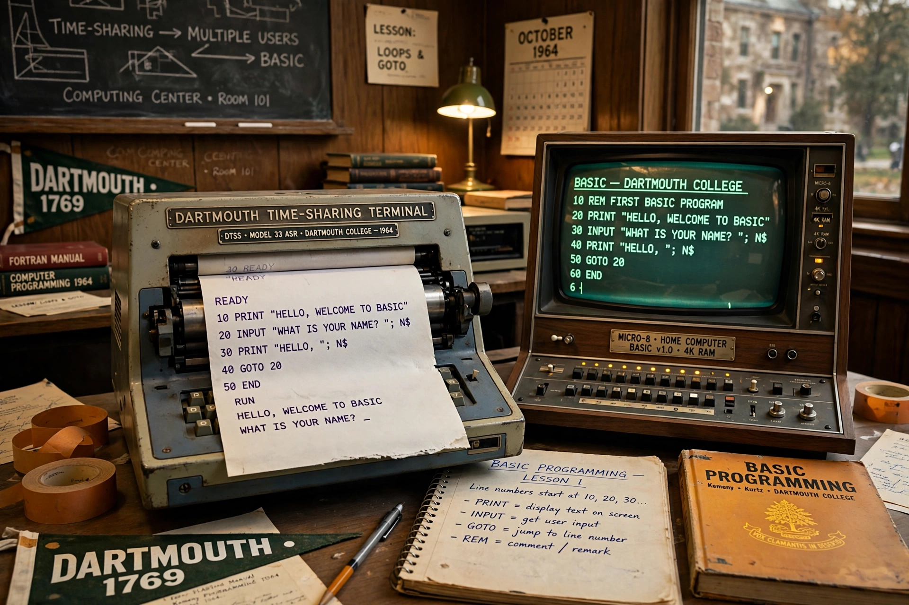

BASIC (Beginner's All-purpose Symbolic Instruction Code) is a family of general-purpose, high-level programming languages designed for ease of use. It was created in 1964 at Dartmouth College by John G. Kemeny and Thomas E. Kurtz for students without science or mathematics backgrounds.

| BASIC | |
|---|---|
| Designed by | Kemeny & Kurtz |
| First appeared | 1 May 1964 |
| Dialects | Microsoft BASIC, GW-BASIC, QBasic, Visual Basic |
Dartmouth BASIC ran on a time-sharing system with numbered lines and commands like PRINT, LET, GOTO, FOR/NEXT and GOSUB. In the 1970s, Microsoft's Altair BASIC (1975) — Bill Gates and Paul Allen's first product — launched the microcomputer era; BASIC interpreters shipped in ROM on the Apple II, Commodore 64, ZX Spectrum and BBC Micro, teaching a generation to program. Structured dialects and Visual Basic (1991) carried it into Windows application development. Critics, notably Edsger Dijkstra, blamed BASIC for undisciplined GOTO-heavy style, but its accessibility remains its legacy.
Visual Basic · Dartmouth · Microsoft
Recreated from memory.